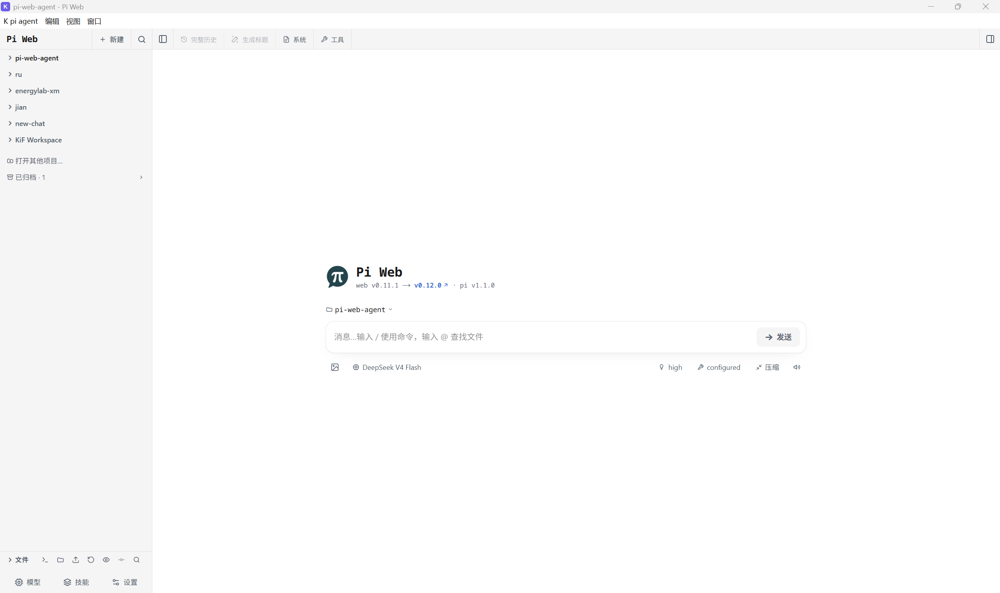

Windows Personal Agent App · 基于 Pi Web
你的个人电脑助手
面向科研、学习与日常工作。K-Pi Agent 将 Pi Web 包装为 Windows 桌面应用，让没有编程背景的用户也能更方便地开始搭建自己的个人 Agent。
从桌面开始，打造自己的 Agent
K-Pi Agent 是一个基于 Pi Web 的独立 Windows 桌面应用。它把 Pi Web 与所需的 Node.js 运行环境封装进安装包，由桌面外壳管理窗口、托盘和本地服务；Agent 界面与会话能力来自上游 Pi Web。
信息调研与搜索围绕资料查找、信息比较和结果整理。
文献与学习辅助获取有权访问的文献，整理阅读材料。
数据与汇报辅助数据分析、绘图、PPT 与办公材料准备。
电脑问题排查分析报错和配置问题，辅助排查软件环境。
这些是项目希望逐步完善的方向，不代表当前版本已具备并验证所有专用能力。实际效果取决于模型、工具、技能和权限。
软件界面

作者提供的实际软件截图。图中的模型与项目是个人配置示例，并非安装包预置内容。
开始使用
- 下载 Windows x64 安装包并完成安装。
- 打开应用，在 Pi Web 模型设置中配置自己的模型服务或提供商登录。
- 选择工作目录，开始与 Agent 协作。
首次使用需要配置自己的模型服务。仓库和安装包不附带个人 API Key；在线模型调用由你配置的服务商处理，可能产生费用。
查看下载、校验值与发布说明 →